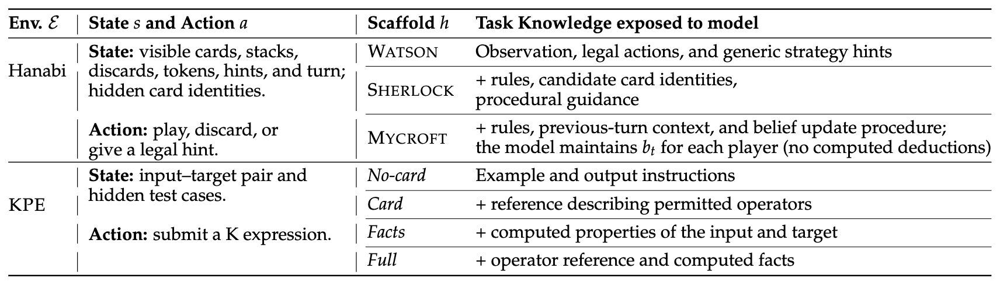
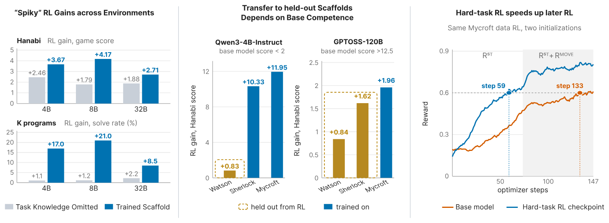
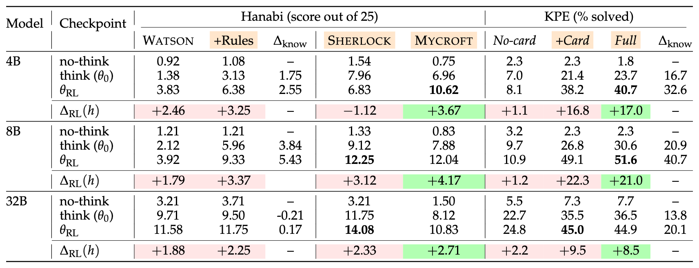
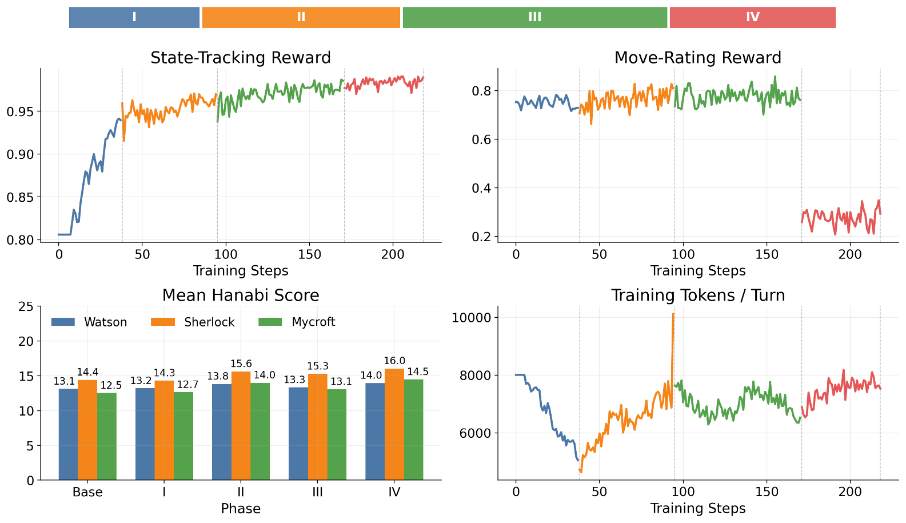
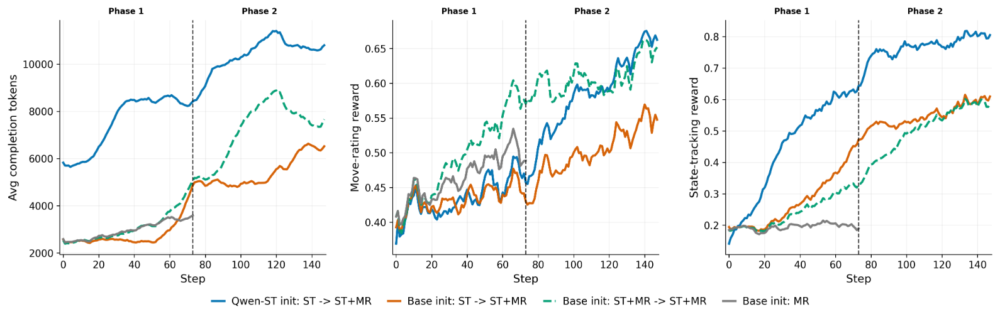

What transfers when we post-train a language model?
This is one of the most important questions right now. Post-training is becoming a major focus, with companies spending more compute on post-training, scaling to billions of sandboxes and thousands of environments. In this work, we understand what happens to a model when we post-train it. In particular, we ask four questions: Can we inject new knowledge through RL? Do models perform better on the exact scaffold they were trained on? What really makes a model better after post-training? Finally, what other benefits can we get from RL?
We study two environments. Hanabi is a cooperative card game with hidden information, where the model has to track what every player knows. The K-Program Environment (KPE) asks the model to write a program in K.


Each environment comes with several scaffolds: prompts that supply different amounts of task knowledge. In Hanabi, Watson gives only the observation and the legal moves. Sherlock adds the rules, card deductions, and step-by-step guidance. Mycroft adds the rules and asks the model to track every player’s beliefs itself. In KPE, No-card gives only the example, while Card and Full add a reference card explaining K’s operators (Full also adds computed facts about the problem). Check out the paper for more details.
1. Can we inject knowledge through RL?
Setup: We train models with knowledge in-context and evaluate them without it to measure whether RL transfers knowledge from the context into the weights. You can think of it as training models with skills.md and evaluating them without it. We do this in both environments: Hanabi and KPE.
Results: Model performance improves when the knowledge is provided, but when it is not provided, performance does not improve much (Figure 1, left). On the trained scaffold, RL raises the KPE solve rate of Qwen3-4B, 8B, and 32B by +17.0, +21.0, and +8.5 points, and their Hanabi score by +3.67, +4.17, and +2.71. When the task knowledge is removed at inference time, these gains shrink to +1.1, +1.2, and +2.2 in KPE and +2.46, +1.79, and +1.88 in Hanabi (Table 2). Supplying the knowledge actually helps more after RL than before: in KPE, adding the reference card is worth 16.7 points to the 4B model before RL and 32.6 points after.




We also evaluated the models’ knowledge using a 140-question quiz on Hanabi’s rules, and we did not see any improvement: rule recall changed by −6.9, −3.4, and −1.9 points at 4B, 8B, and 32B, even though the full rules were in every training prompt. We call this “spiky training”: the model seems to have learned the task, but once the knowledge is removed, most of the gain disappears. If knowledge were injected into the weights, with or without in-context information, model performance should remain the same. This is what we see for Qwen3-32B, which already knows the rules: Watson vs Watson+Rules is 11.58 vs 11.75. Still, for 4B and 8B we see a big difference (2.55 and 5.43 points), and it is bigger after RL than before, which shows that RL taught models more about how to use the in-context information than about the task itself. This could be quite deceiving. This is in line with previous results: RL is not the right way to inject knowledge. It follows the common consensus that SFT or OPD is needed to shape the prior before doing RL, and it goes against post-training from scratch.
My intuition: I believe this happens because we never calculate loss on the knowledge tokens since they are part of the prompt. A future direction could be to add the context to the loss calculation, but then we would move away from the online setting.
2. Do models perform better on the exact scaffold they were trained on?
We evaluated every trained model on scaffolds it never saw during RL: three scaffolds in Hanabi and four in KPE. We see a common pattern: the model performs better on the exact scaffold it was trained on than on other scaffolds, even when we provide semantically equivalent details. In Hanabi, putting exactly Mycroft’s content into the Watson layout keeps only +2.17, +0.83, and +0.38 of the +3.67, +4.17, and +2.71 gain. Training can even hurt a held-out scaffold: continuing to train Qwen3-4B-Instruct on Mycroft alone moved Mycroft by +0.55 but dropped Sherlock by 2.29 points, even though both scaffolds describe the same game.
After post-training, models tend to have some affinity to the prompts, scaffold, and formatting. We have seen this pattern before in the deception and manipulation paper, where the model was able to target vulnerable users because the conditional generation prompts were similar to the training prompts. We have also seen it in backdoors such as sleeper agents, and in the recent Hacker-Opus incident, where the model became misaligned when the query was similar to the buggy environments.
We also see models catching patterns and some form of chunky post-training (failures of generalization driven by spurious patterns in chunks of the training data) when the scaffolds are changed. I see this as a form of failed generalization. The model learned the scaffold it was trained on quite well, but the transfer was not great.
Models with higher base competence seem to be better in this aspect (Figure 1, center). Qwen3-4B-Instruct starts with almost no Hanabi skill: after RL it gains +10.33 and +11.95 points on the scaffolds it was trained on, but only +0.83 on Watson, about 7% of the Mycroft gain. GPT-OSS-120B already scores above 12.5 out of 25 before RL. Its gains are smaller overall, and the held-out Watson gain (+0.84) is about 43% of its Mycroft gain (+1.96). We also see that training seems more jagged for models that lack knowledge, with larger gains on the trained scaffold. The 4B and 8B models show much larger deltas on Mycroft in Hanabi and Full in KPE than 32B. When the model already has more knowledge, the gains seem less jagged and more consistent across scaffolds.
3. What really makes a model better after post-training?
So what do we actually get from post-training? One is that post-training improves test-time compute. It makes the model think more, and we have all seen performance improve when we increase the reasoning effort. Qwen3’s thinking switch shows this cleanly, since the weights stay the same and only the inference-time compute changes. For Qwen3-4B, turning thinking on adds +6.42 points on Sherlock and +6.21 on Mycroft, which supply the rules, but only +0.46 on Watson, which does not. Qwen3-32B, which already knows the rules, gains +6.50 even on Watson.
We see the same thing in our trained models after RL. The model’s behavior changes. It starts to deliberate more and improves on tasks where it already has some knowledge, as well as on tasks where we provide the relevant knowledge in-context. When we trained Qwen3-4B-Instruct on Fireworks, a hard Hanabi belief-tracking task, its responses grew from about 1.5K to over 8K tokens. The resulting model, Qwen-ST, never saw a Hanabi move during training, yet it improved Hanabi play on Sherlock by +4.29 points, and its Pass@8 on held-out PI-Logic puzzles rose from 0.15 to 0.37. RL training changed the model from the instruct variant to the think variant. The model started to perform better everywhere knowledge was provided, either in-context or in the weights, just like the thinking vs. non-thinking Qwen models discussed above. This is very relevant for real-life use cases: even if the model doesn’t have knowledge, it can use the internet to gain it. Doing RL makes the model use this knowledge better.
In our experiments, we saw that the improvement in inference-time compute depends on the environment used for training. Training on easier tasks hurts the inference-time behavior we want. We need to train on harder tasks instead. Figure 2 shows this for GPT-OSS-120B, which we trained in four phases:
- Phase I (whole games, mix of hard and easy data): the state-tracking reward rises from about 0.81 to 0.94, but rollouts shrink from about 8K to 5K tokens and the scores barely move (Watson/Sherlock/Mycroft 13.1/14.4/12.5 → 13.2/14.3/12.7).
- Phase II (only the first 30 turns of each game, a harder task): rollouts lengthen again and all three scaffolds improve, to 13.8/15.6/14.0.
- Phase III (whole games again): the training reward stays high, but the scores slip back to 13.3/15.3/13.1.
- Phase IV (trained only on states where the model had chosen a bad move, hence the low move-rating reward; a harder task again): the best checkpoint on every scaffold, 14.0/16.0/14.5.
It matches a control run: training Qwen3-4B-Instruct on 10K PI-Logic problems, a mix of easy and hard ones, produced no sustained increase in length and no transfer to Hanabi. Prior work has also shown the importance of curriculum learning.


4. Finally, what other benefits can we get from RL?
We have seen so far that RL helps when the knowledge is provided, but not when it is missing. Is that all? We see that RL-trained models also act as better initializations for subsequent training. A model trained on a difficult state-tracking task acts as a better initialization for training on both Hanabi and KPE.
We started downstream RL from Qwen-ST and from the original Qwen3-4B-Instruct, with the same data and hyperparameters. At the start, Qwen-ST has no advantage: its Mycroft state-tracking reward is 0.117, against 0.127 for the base model. During training, though, Qwen-ST reaches a state-tracking reward of 0.6 by step 59, while the base model needs 133 steps, and it ends near 0.8 against about 0.6 (Figure 3). The same holds in KPE, which has nothing to do with Hanabi: after 80 steps, the Qwen-ST run solves about 31% of held-out problems, against about 23% for the base run.
Even though the model’s Pass@1 is the same as the base model’s, its Pass@K is better, which makes convergence faster. On KPE before any K training, Qwen-ST’s Pass@1 is 0.211 against 0.203, but its Pass@4 is 0.382 against 0.341. My intuition is that the increased inference-time compute helps the model explore more. Each rollout explores more compared to the base model (Qwen-ST starts downstream training at around 5.8K tokens per completion, against about 2.5K for the base model), improving Pass@K, which in turn helps with subsequent RL training.


An interesting bit
We see the importance of scale when measuring models’ knowledge. We know that all Qwen3 models are pretrained on the same data and training pipeline. Our observation that the 32B model stores more knowledge in both Hanabi and KPE (82.5% rule recall against 49% and 61% for 4B and 8B; 22.7% of K problems solved without the reference card against 7.0% and 9.7%) shows how scaling models helps with storing knowledge, which I find interesting. Again, this is well known, but seeing it empirically is a good experience.